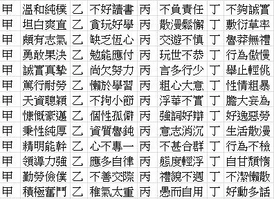

私も「正常じゃない」人間だった 《滌，這個不正常的人》を読む #1
2018年11月、選挙の前に、大学院の先輩と住民投票の話をしていたとき、彼女に言われました。あなたはずっと感情を抑えていて、気持ちがいつもちょろちょろと流れる細い水のようだと。そして、少し時間を取って、子どものころの記憶をたどり、原因を探ってみるようにと。それがすべての自己探究の出発点だと。
私はずっと「自分は正常だ」と思っていました。でも、それらは、「正常ではない反応」だと自分で判断できるもので、煮えたぎる湯の泡のように、次々と湧いてきました。たとえば、ある授業の履修をやめると決めたとき、恥ずかしさと罪悪感を覚えて、「ただの選択で、正しい間違いとは関係ない」と、何度も自分に言い聞かせなければなりませんでした。仕事でミスが続くと、「ダメ1、ダメ2、ダメ3」と数えて、またミスすることを恐れました。実際は、たいしたことではないのに。
そして《滌，這個不正常的人》は爆弾で、いちばん奥底の記憶を、すべて吹き飛ばしました。
私も、耐えられない「ドン」をたくさん集めていた
あるとき、階段の入口で、ベッドを運ぶ人に出会って、あなたは、その人とすれ違えなかった。背中を壁にぴったりつけて、その人と向き合ったまま、通り過ぎるのを待った。……そう聞くと、滌が「こうなった」のには、境目があったようだ。(p139)
……やはり23歳のときだったようだ。ある日、彼はとても大きな「ドン」という音を聞いた。とても大きな「ドン」。彼は、もう耐えられないと言った。その「ドン」は、彼が遭遇した最初のものではなく、何千何百番目の「ドン」だった。(p140)
あの耐えられない「ドン」を、私もたくさん、たくさん集めていました。
出来事そのものは、実は大丈夫なのです。でも、「そんなことのどこが気になるの？」「それはあなたの問題」「別に関係ないでしょ」が、ひとつひとつの「ドン」の源でした。ベッドを運ぶ人とすれ違えなかったのと同じで、他人から見れば小さなことから、たくさんの否定と無視を受け取ってきました。そして私は、ずっと我慢しています。まだ、我慢しています。
同時に、本質の否定について、人は、それに否定的なレッテルを貼ることを、当たり前だと思っているようです。衝動的、うっかり、おおざっぱ、マイペース、根気がない。よい生徒になりたければ、これらの間違った人格特性を消さなければなりません。だから私は、ずっと、問題を解決しようと努力してきました。（抵抗するときもあります。たとえば、私はだんだんマイペースになっていませんか？）

私は、解決されなければならない問題
「その特性は間違っていて、否定されるのが怖い」と思っていたので、それらの特性をしっかり隠せば嫌われないし、嫌なことを我慢して、欲しいものを言わなければ否定されない、と考えていました。
その結果、本当の気持ちや必要なことを言わなければならないときに、まったく言えなくなります。「夢をバカにされるかな？ 私の気持ちをおかしいと思うかな？ 嫌いなものを言ったら、嫌われるかな？ 付き合いにくい人だと思われるかな？」。また否定されるのが怖すぎて、同じ状況が再び起きるのを、ずっと避けてきました。私は、本当にそれが得意です。すぐに人を決めつける人と付き合うことを避ける、自分のことを話さなければならない場を避ける、「私は何が嫌い」とは決して言わず、いつも「私は何が好み」と言う。
だから、去年、大事な友人が「私は壊れていて、直されるべきだ」と思っていたことは、本当に胸が張り裂けそうでした。彼が私を愛していて、私のためになると思っていて、いい人だと、わかっていても。
クライミングは、しばらくのあいだ、私の人格特性に対する認識を修復してくれていました。身長が高い低い、体が柔らかい硬い、というのと同じで、ルートの前では、絶対的な良し悪し、正しい間違いはなく、表と裏でしかないのです。そして、恐怖の本質を見分けること、恐怖に向き合う練習をすること、失敗してもいいと練習することも、学びました。（〈クライミングが教えてくれたこと〉は、もう1年半も前に書いたんですね……！）
大学3年の夏休み、花蓮・台東でキャンプのスタッフをしていて、ある夜、キャンプのリーダーとふたりでコンビニに夜食を食べに、気分転換に出かけました。当時はまだ親しくなくて、私は夜食を選ぶときも話すときも、なんでもいい、曖昧で、慎重でしたが、彼は、好きなものを選ぶように言って、いつも私の返事を辛抱強く待ってくれました。ある日、上司と宜蘭から台北に戻る車の中で、私が「私って、役に立たないですか？（だから簡単に代わりがきくんですよね）」と聞いたとき、彼は、はっきりと「あなたは大事だよ」と言ってくれました。先輩と一緒に卒業にともなう手続きをひととおり終えたあと、彼女がメッセージで、「今日は、あなたがいてくれてよかった」と送ってくれました。
私が本当に必要としていたのは、大切にされていると感じることだけでした。
私の選択（や迷い）、好み、面倒を理由に、嫌われないと確信できること、それだけでした。